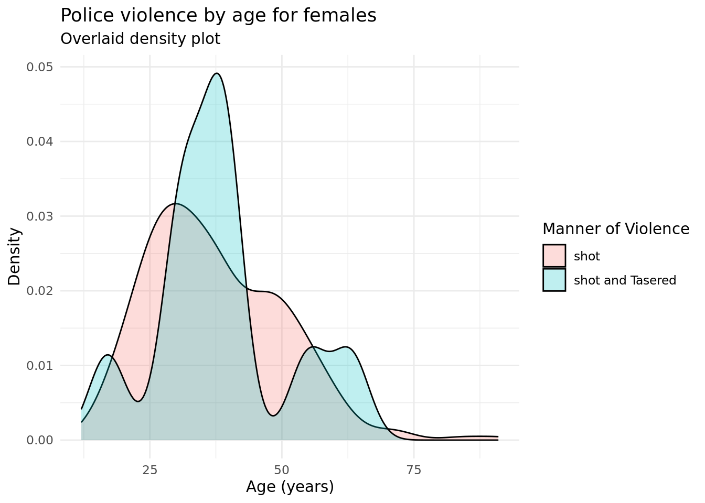
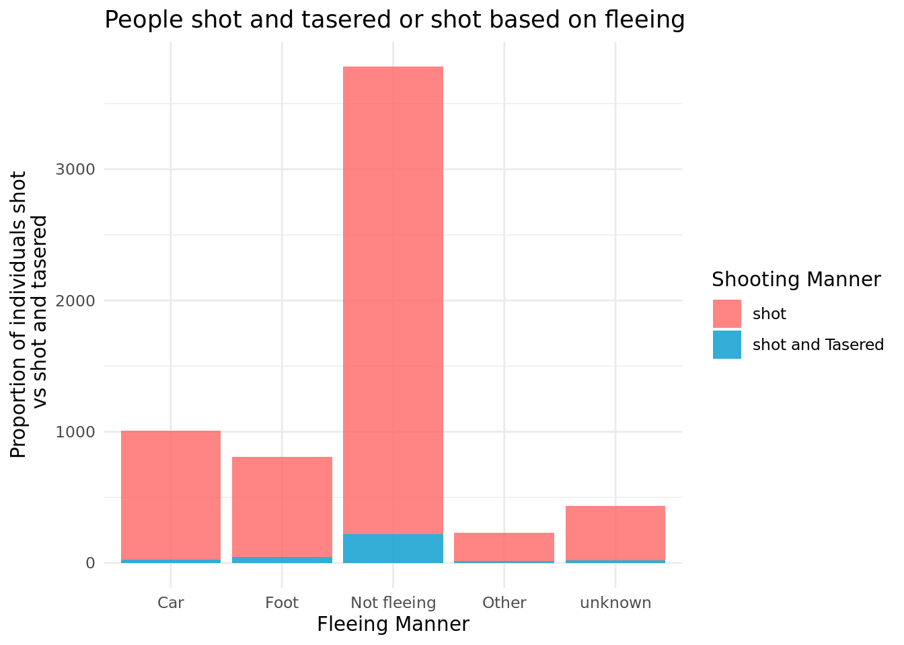

With the police killings of Eric Garner, Breonna Taylor, George Floyd, and many others, excess police force on people of color has been brought to the forefront of the American mind. National protests have commanded sustained attention to racialized violence against civilians. A 2020 study based on data from the Washington Post concluded that BIPOC Americans were on average 2-3 times more likely to be killed by police than white Americans. (Washington Post)
As police brutality and violence has come to a national forefront, data has indicated that the burden of fatal police shootings falls disproportionately on BIPOC in terms of mortality and years of life lost (YLL). Data was sourced from the Washington Post repository on fatal police shootings between 2015-2020, which is dependent on curated news reports and thus may exclude necessary data such as gender and minority status. During this time interval, 5367 fatalities were recorded, of which 4740 offered significant racial data for analysis, and 4653 included both sufficient racial and age data for YLL calculation. Contrary to popular hypotheses, while there was a small decline in deaths of white victims, there was no significant trend in death rates among all other race/ethnic groups (i.e. rates were stable across the 5 year interval). In order, mean deaths were as follows: highest among Native Americans (1.74), then Blacks (1.49), Hispanics (0.74) , Whites (0.57), and Asians (0.25). The authors of the article call for the treatment of police violence as a public health crisis and suggest police demilitarization as a potential intervention.
The US Department of Justice Office of Justice Programs conducted studies across 14 large US cities over 2.5 years to identify specific barriers in police accountability for the violence they perpetuate. There is an existing consensus around the high costs of police violence, both in terms of civil lawsuit financial costs to cities and regarding civilian trust in public service entities. Historically, people have perceived that police are internally positioned as “above the law,” which is further complicated by lack of transparency: “The public, to whom police departments should be held accountable, thus cannot ascertain whether, in fact, the police are policing themselves.” Processes to report police officials are largely inefficient and ineffectual, and the individual reporting may fear backlash from the agency. Furthermore, civil lawsuits are rarely carried through to effect appropriate punishment, and the oversight procedures that do take place often do not provide adequate supervision, allowing offending officers back into the field with little regulation.
Contributing to further distrust is the concept of adultification: a phenomenon in which “notions of innocence and vulnerability are not afforded to certain children… the impact results in children’s rights being either diminished or not upheld” (Davis 2022). Current literature has focused primarily on this phenomenon in black children, as it provides a theoretical framework for the tendency to view black children as older than they are. As a direct result, more physical and systemic violence may be mounted against them (Koch & Kozhumam, 2022). While studies have reported on this phenomenon, personal accounts are particularly poignant in illustrating the need for policy change. “Ahmed” describes his experiences with law enforcement officers at just 12 years old; he recounts having his phone searched and privacy violated when police ambushed him at school despite his only involvement being as a child rape victim. They ignored requests for his parents to be present and were quoted as saying “We’ll just stay here all night until you confess.” He further recalls being treated like a criminal, with no support or intervention from his teachers and adults that were supposed to protect him (Mohdin 2022).
According to a study by the Proceedings of the National Academy of Sciences, men are far more likely to be subject to police violence; the average lifetime odds of being killed by police is about 1 in 2,000 for men and about 1 in 33,000 for women. ^[https://www.pnas.org/doi/10.1073/pnas.1821204116] Risk of death by police for all gender and race groups peak between the ages of 20 y and 35 y and decline with age. This pattern is similar for non-fatal police violence. Studies conclude that police violence is a leading cause of death for young men of color, but not for any other demographic.
The data comes from the Washington Post. It was published with the intent to bolster the evidence-base of police killings for the Black Lives Matter movement.
The data was originally collected by manually combing through local news reports; combining information from law enforcement websites, social media, and other databases (including Fatal Encounters and the “Killed by Police” project). Data collection started in 2015 spurred by a slew of fatal shootings, and the information was updated in 2022. There are no apparent ethical concerns with data collection or presentation.
The observations include details about police-involved killings in the United States. The variables include race, age, gender, armed vs not armed status, location, and if the person killed had a mental illness. The observations are primarily focused on key descriptions of the person killed, but do include some details about the police involved (including the presence/lack of a police body camera and the threat of the person as perceived by police).
Methodology
We plan to represent our four variables through a series of six graphics. Our preliminary graph will be a box plot to compare the ages of those shot vs shot and tasered. We will facet by shot/shot tasered, and our axis values will be age. This will help create a baseline understanding of what ages are most vulnerable to more violence. Having this knowledge will add significance to the future graphs that incorperate gender and race.
Our next two graphs will compare age, race, and shot/shot tasered. We will create one histogram faceted by race and filled by age, filtered for those only shot. Our next graph will be the same, except filtered for those shot and tasered; this will help visualize how age differs by race between those just shot and those shot and tasered.
Next, we will create two graphs to compare age, gender, and shot/shot tasered. The first will be for females, and put age on the x-axis and use logistic regression to compare shot (0) vs shot and tasered (1). The second will be the same method, except using a graph filtered for males. These two graphs have a similar purpose to graphs 2 and 3, except they will be examining the affect of gender on level of violence instead of race.
Finally, we will include a graph of our additional variable, if the victim was fleeing or not (and how so). We predict that this variable might have an impact on if the victim was shot or shot and tasered, so we think it is important to include a representation of it. We will use a histogram with the three possibilities for fleeing on the x-axis (not fleeing, car, foot), and we will fill the graph by shot or shot and tasered. When making equations to analyze our data, we can use multiple linear regression analysis to estimate the importance and relevance of the extra explanatory variable (fleeing) and the response variable (level of violence). This helps account for fleeing status as a potentially confounding variable.
Rows: 6569 Columns: 16
── Column specification ────────────────────────────────────────────────────────
Delimiter: ","
chr (9): Person.Name, Person.Gender, Person.Race, Incident.Location.City, I...
dbl (4): Person.Age, Incident.Date.Month, Incident.Date.Day, Incident.Date....
lgl (2): Factors.Mental-Illness, Shooting.Body-Camera
date (1): Incident.Date.Full
ℹ Use `spec()` to retrieve the full column specification for this data.
ℹ Specify the column types or set `show_col_types = FALSE` to quiet this message.
dataset_4 |>ggplot(aes(x = Person.Age, y = Shooting.Manner_binary)) +geom_point() +stat_smooth(method ="glm",color ="green",se =FALSE,method.args =list(family = binomial)) +labs(x ="Age",y ="Manner of Violence",title ="Police violence by age for females") +theme(axis.text.y=element_blank(),axis.ticks.y=element_blank() ) +annotate(geom="text", x=6, y=1, label="Shot&Tasered", color="black") +annotate(geom="text", x=0, y=0, label="Shot", color="black")
`geom_smooth()` using formula = 'y ~ x'

Age and shot/shot tasered (male)
dataset_5 <- police_shootings |>filter(Person.Gender =="Male", Shooting.Manner =="shot and Tasered"| Shooting.Manner =="shot") |>mutate(Shooting.Manner =as.factor(Shooting.Manner),Shooting.Manner_binary =if_else(Shooting.Manner =="shot and Tasered", 1, 0))
dataset_5 |>ggplot(aes(x = Person.Age, y = Shooting.Manner_binary)) +geom_point() +stat_smooth(method ="glm",color ="green",se =FALSE,method.args =list(family = binomial)) +labs(x ="Age",y ="Manner of Violence",title ="Police violence by age for males") +theme(axis.text.y=element_blank(),axis.ticks.y=element_blank() ) +annotate(geom="text", x=6, y=1, label="Shot&Tasered", color="black") +annotate(geom="text", x=0, y=0, label="Shot", color="black")
`geom_smooth()` using formula = 'y ~ x'
Fleeing Manner and shot vs shot and tased
police_shootings |>ggplot(aes(x = Factors.Fleeing, fill = Shooting.Manner) ) +geom_bar(position ="fill") +labs(x ="Fleeing Manner",y ="Number of individuals shot\n vs shot and tasered",title ="People shot and tasered or shot based on fleeing manner",fill ="Shooting Manner" )

Predictions and inferences:
We predict that younger age ranges will experience higher rates of violence (shot and tasered vs shot). People in the age range of young adult to mid-thirties (approximately 20 - 35) will experience higher rates of shot and tasered vs just shot. (graph 1)
(prediction for comparing 2 and 3) We predict that Hispanic and African-American targets will be shot and tased comparatively more than just shot; oppositely, white and Asian targets will be shot comparatively more than shot and tased.
(prediction for comparing 4 and 5) We predict that male gender targets will be shot and tased comparatively more than just shot; oppositely, female (or other) gender targets will be shot comparatively more than shot and tased.
When making a visualization of fleeing status vs. shot/shot and tased, we infer that the victim’s fleeing status affects the level of violence. We predict that those not fleeing will be shot and tased at the highest rate compared to just shot (because they’re in close proximity to tase), followed by fleeing on foot, and finally fleeing with a car. This prediction is based on how convenient and easy it is to tase and shoot compared to just shooting.
3. Results
Graph 1: This graph relates age to the shooting manner of the police officer. We can see that the majority of those in both groups (shot, and shot and tasered) center around ages 25 to 40. This is contrary to our prediction, that the age group would be younger for those who were shot and tasered, compared to those who were just shot. However, it seems that, from our results, age had very little effect on whether or not someone was shot or shot and tasered.
Graphs 2 and 3: These two graphs shows the effect of race and age on victims shot by the police. The trend across graphs was that the most likely age range to be shot for all demographics is in the late twenties to thirties, especially in the white population. Specifically, the most likely age to be shotThis matched with our predictions. The races with the highest count of those shot were in the African American, White, and Hispanic populations. We assumed that those of minority populations would be among the most targeted, and the data partially represents that hypothesis. This graph shows the effect of race and age on victims who were both shot and tasered. Again the trends center on those in the African American, Hispanic, and White populations, however the age spread is wider and older than the graphs of those who were only shot. Contrary to our assumptions, this seems to indicate that those shot and tasered span victims ages twenty to fifty in all races, and there is no definitive correlation between age and whether or not someone was shot, or shot and tasered. However, there were peaks in the graph in victims of African American descent in their late twenties and early thirties, as well as white and Hispanic victims in their thirties. The majority of those shot and tasered were in their twenties to thirties and African American, Hispanic, and white races. However, this is very similar to the trend among those who were shot and not tasered, and there is no definitive effect of race and age on the police officer’s shooting manner.
Graph 4: This Graph is showing the logistic regression line for females, with individuals both shot and tased at the top, and individuals only shot at the bottom. There is not a very high correlation, as we can see the logistic regression line does not show much shape. Based on the trends of the graph, if we greatly extended the x-axis age, we would see the full logistic line. Surprisingly, against what we would have predicted, there seems to be a small positive correlation between being tased & shot and age. Perhaps that is due to the fact that police officers view older people as less of a threat, and start off by using a taser, which, if not effective, turns into a lethal shooting. Of note is the fact that every piece of data in this dataset is people who had been shot.
Graph 5: Compared to the graph for females, the male graph has a weaker correlation. It seems that age has barely any difference in whether or not people were just shot, or shot and tasered. However, there is still a weak positive correlation, perhaps due to the explanation given for graph 4 (that older people were more often tasered first, due to being perceived as less of a threat).
Graph 6: This graph shows the relationship between fleeing manner and whether or not someone was shot, or shot and tasered. Overall, there is little correlation between these two variables. There is a slightly higher probability that someone was shot and tasered if they were not fleeing or on foot as opposed to in a car or pursuing an unknown/other manner of departure. However, there is not a large enough correlation to relate shooting manner and fleeing manner.